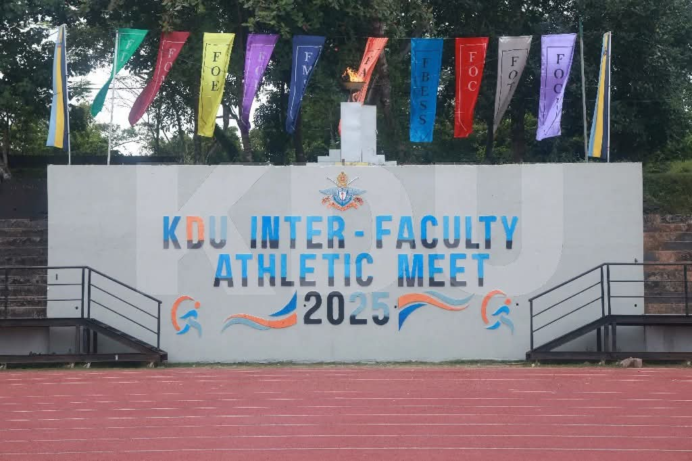
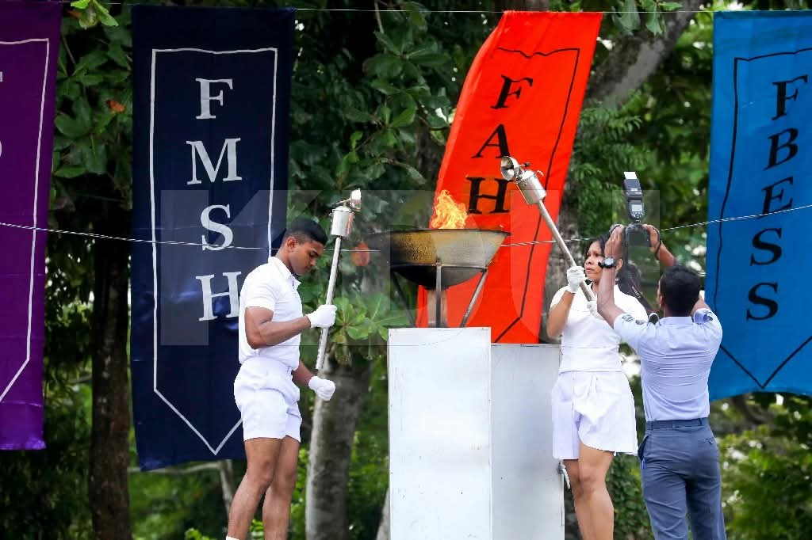
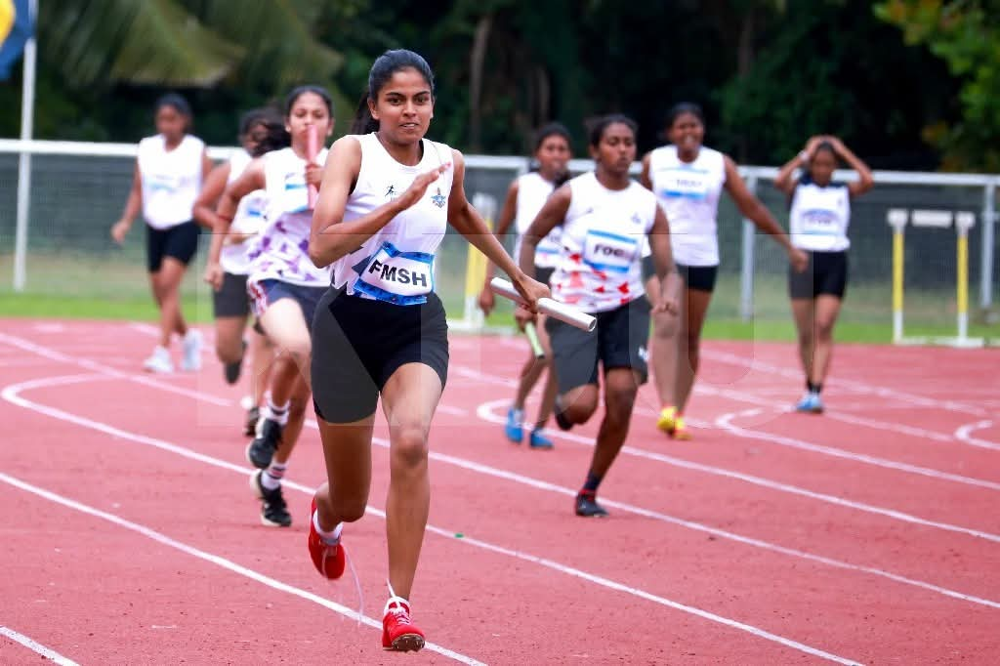

The KDU Inter-Faculty Athletic Meet 2025 is a flagship sports event at General Sir John Kotelawala Defence University, bringing together students from all faculties in a celebration of physical fitness, competition, and spirit. The meet features a wide range of track and field events, strength-based challenges, and team competitions, highlighting both individual excellence and collaborative effort.
Athletes from various faculties, including Engineering, Law, Built Environment, Allied Health Sciences, Management & Humanities, Medicine, and more compete fiercely for domination in sprints, distance runs, relays, jumps, throws, and other athletic disciplines. This meet not only strengthens inter-faculty rivalries but also fosters camaraderie, discipline, and mutual respect among cadets and day scholars.
The event is a part of KDU’s broader commitment to holistic student development, leveraging their well-equipped sports infrastructure to encourage a culture of wellness, teamwork, and sporting excellence. It aligns with KDU’s physical education goals, as outlined in its annual reports, by promoting regular participation in athletics and sporting events.
The Inter-Faculty Athletic Meet culminates in an awards ceremony, where students, faculty members, and university leadership come together to celebrate achievements, sportsmanship, and the indomitable spirit of competition.
🗓 Date: 30th April 2025, 8:00 AM onwards
📍 Location: Mahinda Rajapaksha International Stadium, Biyagama.